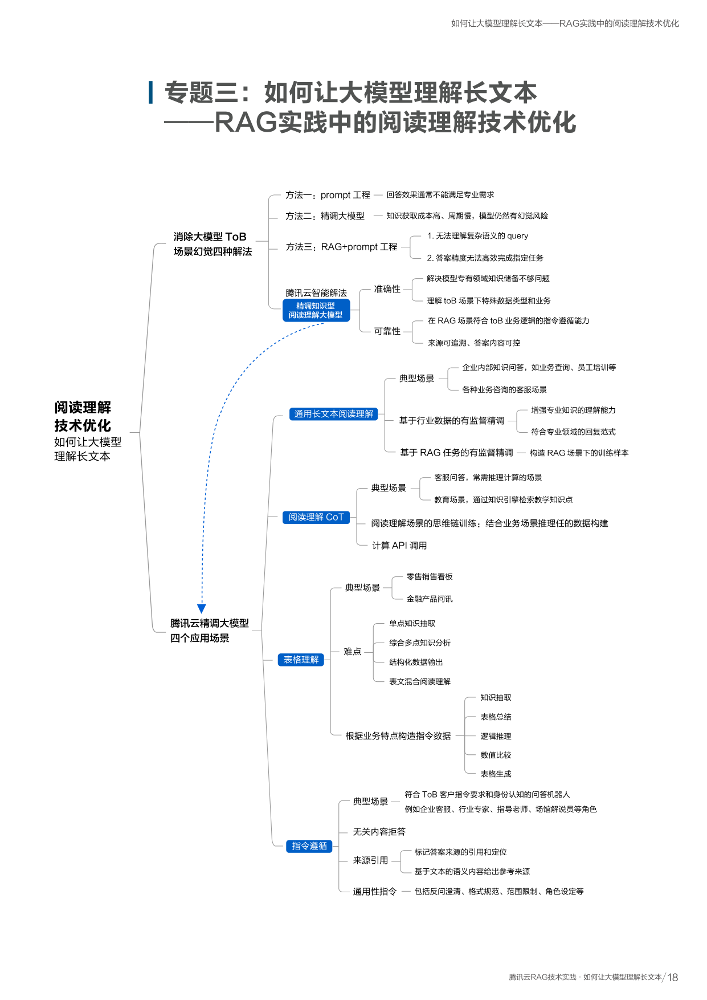
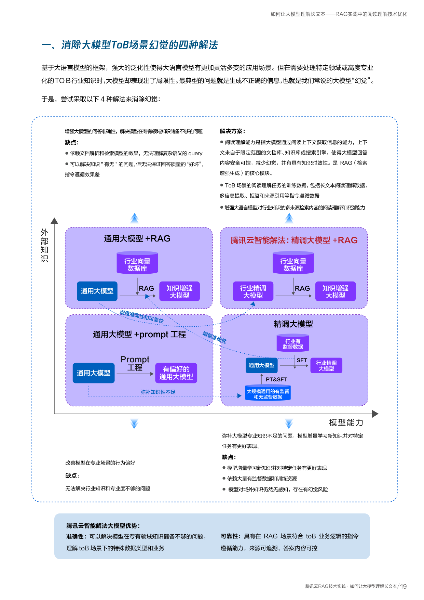
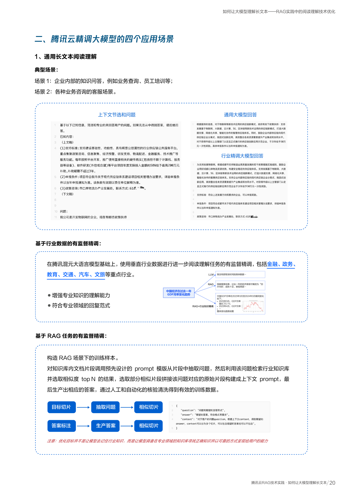
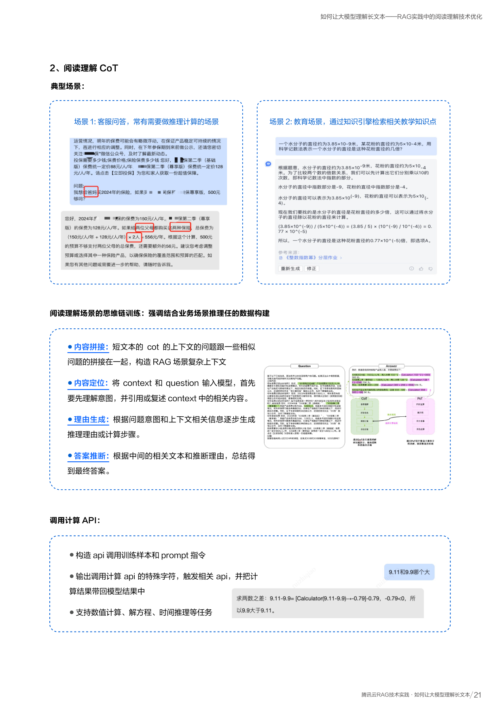
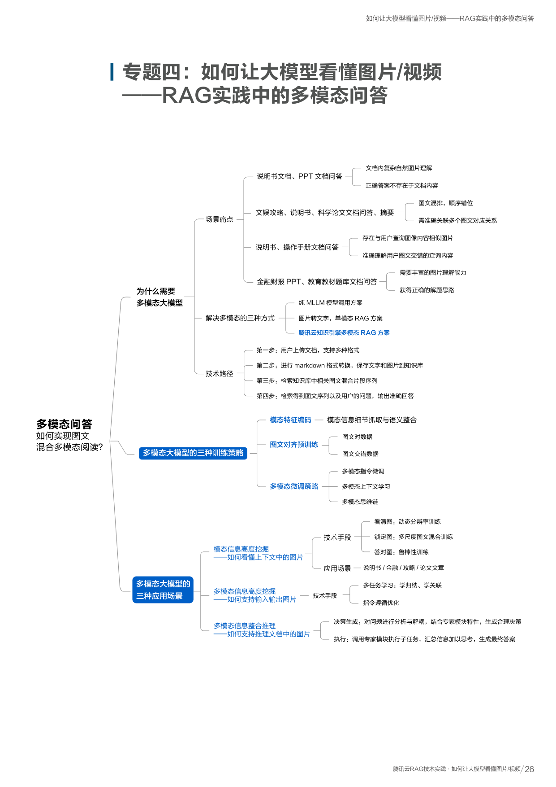
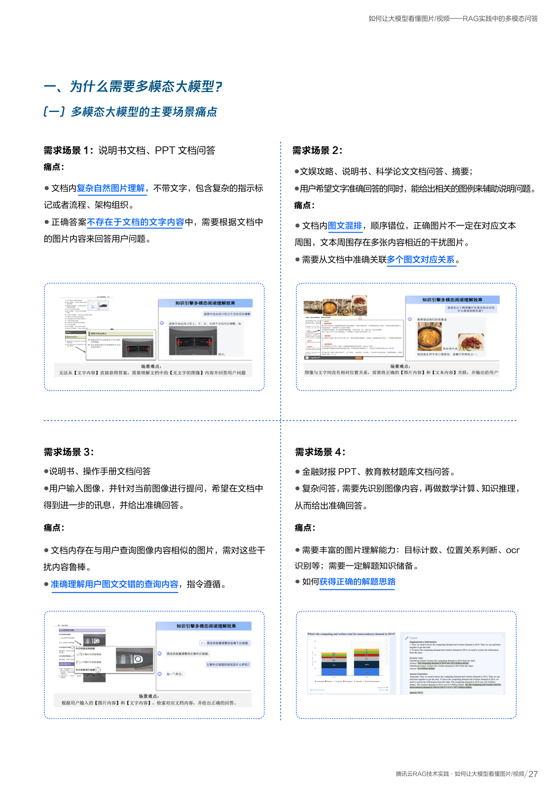
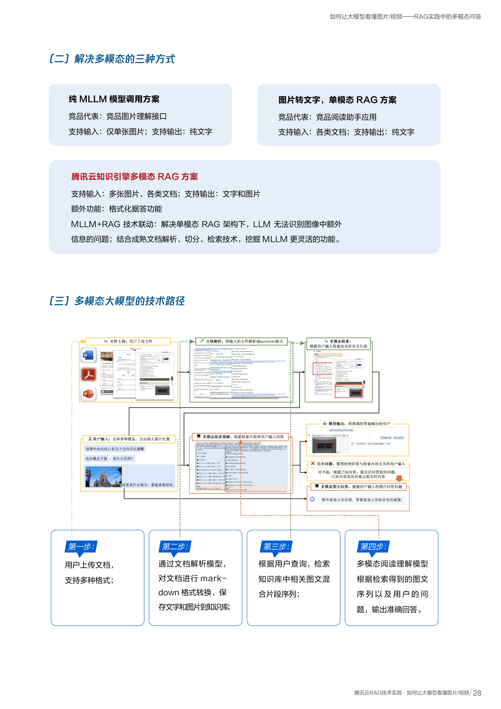
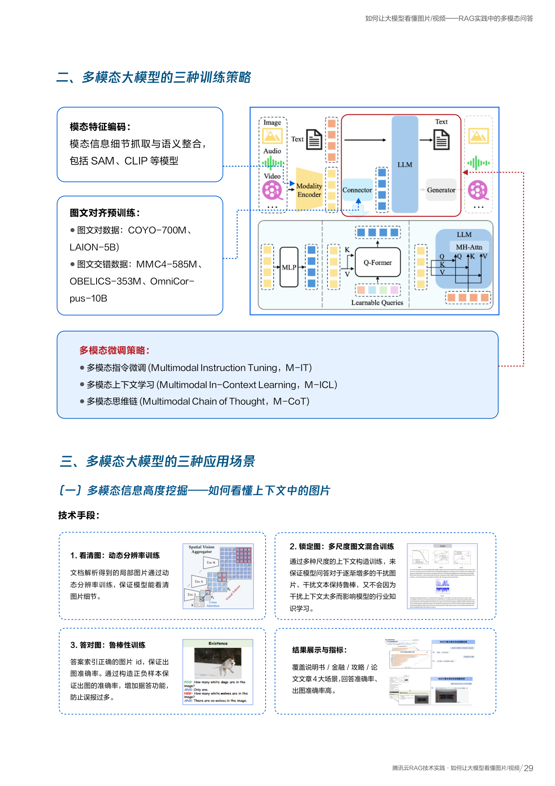

如何让大模型理解长文本
RAG 实践中的阅读理解技术优化
什么是阅读理解能力？
阅读理解能力是指大模型通过阅读上下文获取信息的能力。上下文来自限定范围的文档库、知识库或搜索引擎，使得模型回答内容安全可控、减少幻觉、具备知识时效性。
它是 RAG 的核心模块——前面的文档解析和检索是为了找到正确的内容，而阅读理解决定了模型能否基于这些内容给出可靠回答。
💡 幻觉（Hallucination）：大模型生成看起来合理但实际不正确的信息。特别是在专业领域，模型训练数据不足时最容易出现。
一、消除 ToB 场景幻觉的四种解法
面对需要处理专业化行业知识的 ToB 场景，腾讯云对比了四种解法，最终采用"精调大模型 + RAG"的组合方案：
方法一
Prompt 工程
改善模型在专业场景的行为偏好
方法二
精调大模型
用行业数据做增量学习，对特定任务有更好表现
方法三
RAG + Prompt
弥补大模型专业知识不足
腾讯云解法
精调大模型 + RAG
集合前三种方法的优势
✅ 可靠性：符合 ToB 业务逻辑的指令遵循
二、精调大模型的四个应用场景
点击下方标签切换查看不同场景的详细介绍：
通用长文本阅读理解
典型场景：企业内部知识问答（业务查询、员工培训）、各种业务咨询客服
基于行业数据的有监督精调
在腾讯混元大模型基础上，使用金融、政务、教育、交通、汽车、文旅等重点行业数据做阅读理解任务的精调：
- 增强专业知识的理解能力
- 符合专业领域的回复范式
基于 RAG 任务的有监督精调
构造 RAG 场景下的训练样本，四步流程：
通过人工+自动化核验清洗得到训练数据
阅读理解 CoT（思维链）
典型场景：客服问答中需要推理计算的场景、教育场景（通过知识引擎检索教学知识点）
💡 CoT（Chain of Thought，思维链）：让模型像人一样一步步推理，而不是直接给答案。这样推理过程透明、结果更准确。
四步思维链训练
内容拼接
短文本的 CoT 上下文与相似问题拼接，构造 RAG 场景复杂上下文
内容定位
模型先理解意图，引用或复述上下文中的相关内容
理由生成
根据问题意图和相关信息，逐步生成推理理由或计算步骤
答案推断
根据中间推理过程，总结得到最终答案
表格理解
典型场景：零售销售看板、金融产品问讯
难点：单点知识抽取、综合多点知识分析、结构化数据输出、表文混合阅读理解
根据表格理解的业务特点，构造五种指令数据：
多种表格形式（markdown/html/csv），含简单和复杂表格
单表多行多列、多表信息的知识问答和内容总结归纳
根据表格信息做条件判断、逻辑推理
最小值/最大值/最佳值计算，长表格结合 Text2SQL 和计算 API
按条件筛选表格内容，或根据 KV 数据生成表格
指令遵循
典型场景：符合 ToB 客户指令要求和身份认知的问答机器人（企业客服、行业专家、指导老师等角色）
无关内容拒答
知识精度要求高的场景（金融客服、政策问答）。
技术：构造正负样本对（相关/无关 context 对应正面回答/拒答），拼接不相关但有一定检索相似度的 context，让模型学习真实场景拒答能力。
来源引用
标记答案来源的引用和定位。
技术：构造出引用/不出引用的正负样本，引用和答案同时输出，一个回答可对应多个参考来源。
- LLM 参数规模更大，语义理解能力远超传统 Embedding 模型
- LLM 支持更长的序列（8K/32K+），传统模型只有 0.5~2K
- 基于语义内容匹配来源，而非简单的关键词匹配，准确率更高
通用性指令
包括反问澄清、格式规范、范围限制、角色设定等。构造泛化组合数据增强指令遵循能力，训练指令评估模型优选高质量指令。




如何让大模型看懂图片/视频
RAG 实践中的多模态问答
为什么需要多模态大模型？
在企业文档中，大量关键信息以图片形式存在——架构图、流程图、数据图表、产品照片等。如果 RAG 只能处理文字，就会丢失这些重要信息。多模态大模型（MLLM）能同时理解文字和图像，是 RAG 处理真实文档的必备能力。
💡 MLLM（Multimodal Large Language Model）：多模态大语言模型，能同时处理文字、图片甚至视频的 AI 模型。
一、四大场景痛点
文档图文混排
说明书/PPT 文档中，图片与文本顺序错位，正确图片不一定在对应文本附近，周围还有内容相近的干扰图片。需要从文档中准确关联多个图文对应关系。
图文交错查询
用户输入图像并提问（如拍照操作手册某页提问），系统需在文档中找到相关信息，对干扰内容保持鲁棒，准确理解图文交错的查询意图。
复杂图片理解
文档内复杂自然图片（不带文字，包含复杂指示标记或流程/架构组织），正确答案不在文字中而在图中，需要深入理解图片内容。
图像推理计算
金融财报PPT、教育教材题库文档问答。需要先识别图像内容，再做数学计算、知识推理，需要目标计数、位置关系判断、OCR 识别等多种能力。
二、三种解决方案对比
方案一：图片转文字
将图片 OCR 为文字，走单模态 RAG
支持输出：仅纯文字
方案二：纯 MLLM 调用
直接用多模态大模型处理
支持输出：纯文字
方案三：腾讯云多模态 RAG
MLLM + RAG 技术联动
支持输出：文字和图片
三、腾讯云多模态 RAG 四步流程
用户上传文档
支持 PDF/PPT/Word 等多种格式
Markdown 转换
文档解析模型提取文字和图片，保存到知识库
检索图文片段
根据用户查询，检索知识库中相关图文混合片段
多模态阅读理解
MLLM 根据检索到的图文序列和问题输出准确回答
四、多模态大模型的技术路径
构建多模态大模型分为三个阶段，从基础的图像理解到精细的任务适配层层递进：
模态特征编码
模态信息的细节抓取与语义整合
使用 SAM（分割万物模型）和 CLIP（图文对齐模型）等将图片编码为模型能理解的特征向量，就像给图片做"翻译"。
图文对齐预训练
让模型学会"图和文说的是同一件事"
使用海量图文对数据（COYO-700M、LAION-5B）和图文交错数据（MMC4、OBELICS、OmniCorpus）进行预训练，让模型学会图文对应关系。
多模态微调策略
针对具体任务精细调优
- 多模态指令微调（M-IT）：让模型学会遵循图文相关的指令
- 多模态上下文学习（M-ICL）：让模型能从少量图文示例中学习
- 多模态思维链（M-CoT）：让模型对图像内容做逐步推理
五、三种训练策略
针对 RAG 场景中"看图回答"的需求，腾讯云设计了三种训练策略：
看清图：动态分辨率训练
文档解析得到的局部图片通过动态分辨率训练，保证模型能看清图片中的细节内容（文字、数字、标注等）。
锁定图：多尺度图文混合训练
通过多种尺度的上下文构造训练，保证模型对逐渐增多的干扰图片、干扰文本保持鲁棒，不会因为干扰内容太多影响行业知识学习。
答对图：鲁棒性训练
答案索引正确的图片 ID，通过正负样本保证出图准确率。增加据答功能，防止误报过多。覆盖说明书/金融/攻略/论文 4 大场景。
六、三大应用场景
图片信息挖掘
核心问题：如何看懂上下文中的图片？
覆盖说明书/金融/攻略/论文 4 大场景。回答准确率和出图准确率高。
训练策略：动态分辨率（看清图）+ 多尺度混合训练（锁定图）+ 正负样本（答对图）
输入输出图片
核心问题：如何支持用户发图提问、回答带图？
多任务学习
- 学归纳：单模态摘要、信息提取
- 学关联：多尺度图文交错排序、长视觉上下文图片定位
指令遵循优化
利用问题改写模型、指令进化策略，修改用户问题主体和细节，优化摘要总结、带图问答的指令遵循能力。
功能：图查询功能 + 摘要功能
推理文档中的图片
核心问题：如何对图片做复杂推理和计算？
两步流程：
四大专家模块：
按要求针对性地提取图像中的文本
识别并定位图像中的对象，擅长比较数量和识别空间关系
处理任何与图像内容相关的查询，善于分析图像
分析和解释图表信息，提取数据点、了解趋势、识别标题/轴/标签/图例




原始文档页面
点击查看完整原始 PDF 页面